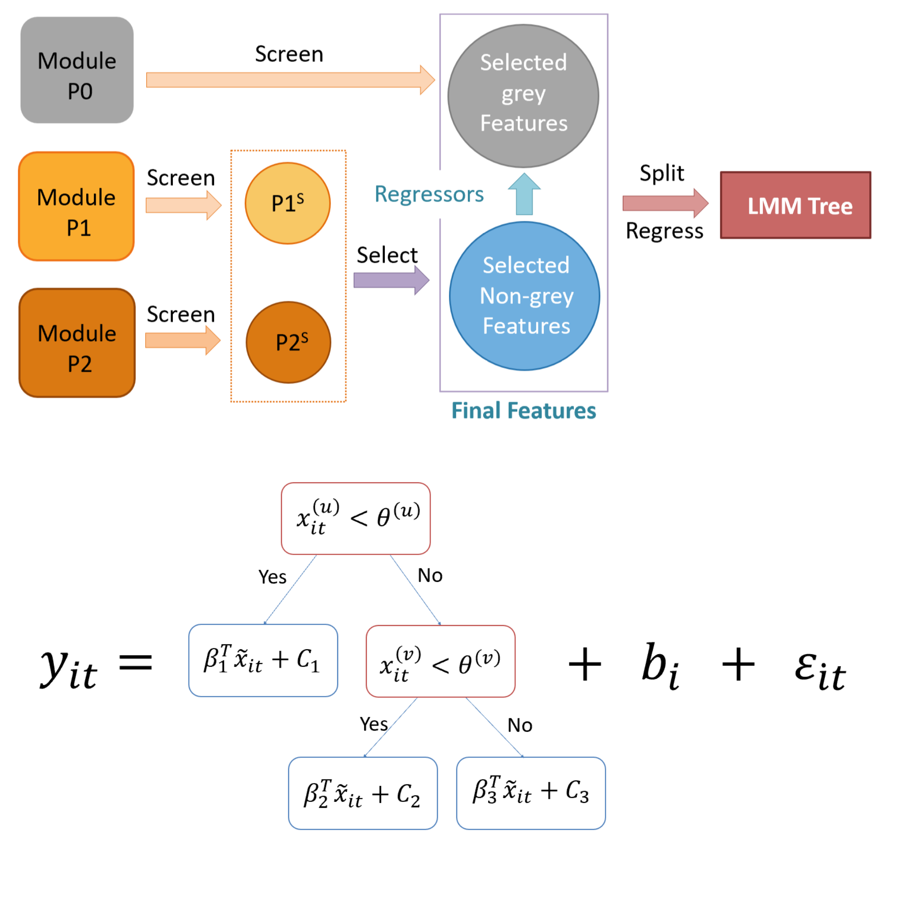

Yuancheng Xu
Senior Undergraduate, Mathematics Department
Southern University of Science and Technology
Southern University of Science and Technology
Email: xuyuancheng0 [at] gmail [dot] com
Research Interests
- Optimization
- Machine Learning
- Signal Processing
- Stochastic Analysis and Probabiltiy
About me
I'm a senior undergraduate student in the Department of Mathematics at Southern University of Science and Technology. I enjoy cross-disciplinary research and I am broadly interested in data-driven optimization, topics in machine learning (including generalization in deep learning, adversarial learning and transfer learning) as well as their applications. Recently I am combining mean field games/control and reinforcement learning to study behavior of a large number of agents.
Education
B.S. Candidate in Mathematics and Applied Mathematics
GPA: 3.94/4.00, Ranking 1/94
Advisor: Prof. Jie Xiong and Prof. Zhen Zhang
Shenzhen, China
![[ByteDance]](Source_files/NYU.jpg)
Experience
![[NYU Shanghai]](Source_files/NYUSH.png)
![[NYU Shanghai]](Source_files/NYUSH-square.jpg)
Research

FREEtree: Fuzzy Random Effect Estimation Tree for Longitudinal Data with Correlated Features.
Area: Statistical Machine Learning
- Designing FREEtree which selects features more unbiasedly by first screening within each cluster of features and then select them among clusters using Linear Mixed-Effect Model Tree (LMM tree). If no natural choices for regressors are available, LMM trees regress on dominant principal components of each correlated cluster. Finally, it uses selected features as both splitters and regressors to fit an LMM tree for prediction.
- Simulation of FREEtree on datasets that includes random effect and treatment-time interaction. FREEtree outperforms other tree-based methods for longitudinal setting such as RE-EM tree and Glmertree in terms of prediction, and successfully recovers the underlying time-treatment structure and true important features.
- Adapting Weighted Correlation Network Analysis (WGCNA) to longitudinal dataset by using distance measure of time series such as dynamic time warping(DTW).
Advisor: Prof. Christina Ramirez (UCLA)
[Poster] [Working Paper]![[NYUSH-research]](Source_files/NYUSH-ResearchPic.jpg)
Persistent Neural Activity Based on Negative Derivative Feedback Control and Spike-timing-dependent Plasticity
Area: Computational Neuroscience
- Using the theory of differential equations to derive conditions for persistent activity in both parametric and spatial neural network.
- Simulation of negative derivative feedback control model that attains persistent firing rate in the absence of stimulus using high-performance computing resources.
- Investigating spike-timing dependent plasticity (STDP) rule that can lead to persistent neural activity in parametric networks.
Advisor: Prof. Sukbin Lim (NYU Shanghai)
[Slides]